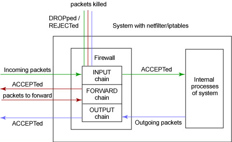

在 IBM Bluemix 云平台上开发并部署您的下一个应用。
注：至少具备 Linux OS 的中级水平知识，以及配置 Linux 内核的经验，将有助于对本文的理解。
对于本文，我们将使用 iptables 用户空间工具版本 1.2.6a 和内核版本 2.4.9。
Linux 安全性和 netfilter/iptables
Linux 因其健壮性、可靠性、灵活性以及好象无限范围的可定制性而在 IT 业界变得非常受欢迎。Linux 具有许多内置的能力， 使开发人员可以根据自己的需要定制其工具、行为和外观，而无需昂贵的第三方工具。 如果 Linux 系统连接到因特网或 LAN、服务器或连接 LAN 和因特网的代理服务器， 所要用到的一种内置能力就是针对网络上 Linux 系统的防火墙配置。 可以在 netfilter/iptables IP 信息包过滤系统（它集成在 2.4.x 版本的 Linux 内核中）的帮助下运用这种能力。
在如 ipfwadm和 ipchains 这样的 Linux 信息包过滤解决方案中，netfilter/iptables IP 信息包过滤系统是最新的解决方案， 而且也是第一个集成到 Linux 内核的解决方案。 对于 Linux 系统管理员、网络管理员以及家庭用户（他们 想要根据自己特定的需求来配置防火墙、在防火墙解决方案上节省费用和对 IP 信息包过滤具有完全控制权）来说，netfilter/iptables 系统十分理想。
理解防火墙配置和信息包过滤
对于连接到网络上的 Linux 系统来说，防火墙是必不可少的防御机制， 它只允许合法的网络流量进出系统，而禁止其它任何网络流量。为了确定网络流量是否合法， 防火墙依靠它所包含的由网络或系统管理员预定义的一组 规则。 这些规则告诉防火墙某个流量是否合法以及对于来自某个源、至某个目的地或具有某种协议类型的网络流量要做些什么。 术语“配置防火墙”是指添加、修改和除去这些规则。稍后，我将详细讨论这些 规则。
网络流量由 IP 信息包（或，简称 信息包）— 以流的形式从源系统传输到目的地系统的一些小块数据 — 组成。 这些信息包有 头，即在每个包前面所附带的一些数据位，它们包含有关信息包的源、目的地和协议类型的信息。 防火墙根据一组规则检查这些头，以确定接受哪个信息包以及拒绝哪个信息包。我们将该过程称为 信息包过滤。
为什么要配置自己的防火墙？
出于各种因素和原因，需要根据特定需求来配置防火墙。 或许，最重要的原因是安全性。
管理员可能想让他们的防火墙能够阻止未经授权的源访问其 Linux 系统，例如通过 Telnet。 他们可能还想限制进出其系统的网络流量，以便只有来自可信源的流量才可以进入其系统，以及只有授权的流量才可以出去。 家庭用户可能通过允许所有的出站信息包都可以通过，将防火墙配置成较低的安全性级别。
另一个背后的原因是，通过阻塞来自类似广告站点之类的源的多余流量，可以节省带宽。
因而，可以定制防火墙配置来满足任何特定需求和任何安全性级别需求。 这就是 netfilter/iptables 系统的用武之处。
netfilter/iptables 系统是如何工作的？
netfilter/iptables IP 信息包过滤系统是一种功能强大的工具， 可用于添加、编辑和除去规则，这些规则是在做信息包过滤决定时，防火墙所遵循和组成的规则。这些规则存储在专用的信息包过滤表中， 而这些表集成在 Linux 内核中。 在信息包过滤表中，规则被分组放在我们所谓的 链（chain）中。我马上会详细讨论这些规则以及如何建立这些规则并将它们分组在链中。
虽然 netfilter/iptables IP 信息包过滤系统被称为单个实体，但它实际上由两个组件 netfilter和 iptables 组成。
netfilter 组件也称为 内核空间（kernelspace），是内核的一部分，由一些信息包过滤表组成， 这些表包含内核用来控制信息包过滤处理的规则集。
iptables 组件是一种工具，也称为 用户空间（userspace），它使插入、修改和除去信息包过滤表中的规则变得容易。 除非您正在使用 Red Hat Linux 7.1 或更高版本，否则需要从 netfilter.org 下载该工具并安装使用它。
通过使用用户空间，可以构建自己的定制规则，这些规则存储在内核空间的信息包过滤表中。
这些规则具有
目标，它们告诉内核对来自某些源、前往某些目的地或具有某些协议类型的信息包做些什么。
如果某个信息包与规则匹配，那么使用目标
ACCEPT 允许该信息包通过。还可以使用目标
DROP 或
REJECT 来阻塞并杀死信息包。对于可对信息包执行的其它操作，还有许多其它目标。
根据规则所处理的信息包的类型，可以将规则分组在链中。处理入站信息包的规则被添加到
INPUT 链中。处理出站信息包的规则被添加到
OUTPUT 链中。处理正在转发的信息包的规则被添加到
FORWARD 链中。这三个链是基本信息包过滤表中内置的缺省主链。
另外，还有其它许多可用的链的类型（如
PREROUTING 和
POSTROUTING ），
以及提供用户定义的链。每个链都可以有一个
策略，
它定义“缺省目标”，也就是要执行的缺省操作，当信息包与链中的任何规则都不匹配时，执行此操作。
建立规则并将链放在适当的位置之后，就可以开始进行真正的信息包过滤工作了。 这时内核空间从用户空间接管工作。当信息包到达防火墙时，内核先检查信息包的头信息，尤其是信息包的目的地。 我们将这个过程称为 路由。
如果信息包源自外界并前往系统，而且防火墙是打开的，那么内核将它传递到内核空间信息包过滤表的
INPUT 链。如果信息包源自系统内部或系统所连接的内部网上的其它源，并且此信息包要前往另一个外部系统，
那么信息包被传递到
OUTPUT 链。类似的，源自外部系统并前往外部系统的信息包被传递到
FORWARD 链。
接下来，将信息包的头信息与它所传递到的链中的每条规则进行比较，看它是否与某条规则完全匹配。
如果信息包与某条规则匹配，那么内核就对该信息包执行由该规则的目标指定的操作。
但是，如果信息包与这条规则不匹配，那么它将与链中的下一条规则进行比较。
最后，如果信息包与链中的任何规则都不匹配，那么内核将参考该链的策略来决定如何处理该信息包。
理想的策略应该告诉内核
DROP 该信息包。
图 1 用图形说明了这个信息包过滤过程。
图 1. 信息包过滤过程
安装 netfilter/iptables 系统
因为 netfilter/iptables 的 netfilter 组件是与内核 2.4.x 集成在一起的，所以只需要下载并安装 iptables 用户空间工具。
需求
下面是安装 netfilter/iptables 系统的需求：
- 硬件：要使用 netfilter/iptables，需要有一个运行 Linux OS 并连接到因特网、LAN 或 WAN 的系统。
- 软件：带有内核 2.4 或更高版本的任何版本的 Linux OS。可以从 http://www.kernel.org 下载最新版本的内核。还需要从 http://www.netfilter.org 下载 iptables 这个用户空间工具， 因为这个工具不是内核的一部分。但对于 RedHat Linux 版本 7.1 或更高版本，不需要下载此工具，因为在版本 7.1 或更高版本中， 标准安装中已经包含了此工具。
- 用户：至少对 Linux OS 有中等水平的了解，以及具备配置 Linux 内核的经验。
安装前的准备
在开始安装 iptables 用户空间工具之前，需要对系统做某些修改。首先，需要使用
make config 命令来配置内核的选项。在配置期间，必须通过将
CONFIG_NETFILTER 和
CONFIG_IP_NF_IPTABLES 选项设置为
Y 来打开它们，因为这是使 netfilter/iptables 工作所必需的。下面是可能要打开的其它选项：
CONFIG_PACKET： 如果要使应用程序和程序直接使用某些网络设备，那么这个选项是有用的。CONFIG_IP_NF_MATCH_STATE： 如果要配置 有状态的防火墙，那么这个选项非常重要而且很有用。这类防火墙会记得先前关于信息包过滤所做的决定，并根据它们做出新的决定。 我将在 netfilter/iptables 系统的优点一节中进一步讨论这方面的问题。CONFIG_IP_NF_FILTER： 这个选项提供一个基本的信息包过滤框架。如果打开这个选项，则会将一个基本过滤表（带有内置的INPUT、FORWARD和OUTPUT链）添加到内核空间。CONFIG_IP_NF_TARGET_REJECT： 这个选项允许指定：应该发送 ICMP 错误消息来响应已被DROP掉的入站信息包，而不是简单地杀死它们。
现在，可以准备安装这个用户空间工具了。
安装用户空间工具
在下载 iptables 用户空间工具的源代码（它类似于 iptables-1.2.6a.tar.bz2）之后，可以开始安装。
您需要以
root 身份登录来执行安装。
清单 1
给出了一个示例，它指出了安装该工具所需的命令、其必要的次序及其说明。
清单 1. 用户空间工具安装的示例
First, unpack the tool package into a directory: # bzip2 -d iptables-1.2.6a.tar.bz2 # tar -xvf iptables-1.2.6a.tar This will unpack the tool source into a directory named iptables-1.2.6a. Now change to the iptables-1.2.6a directory: # cd iptables-1.2.6a The INSTALL file in this directory contains a lot of useful information on compiling and installing this tool. Now compile the userspace tool using the following command: # make KERNEL_DIR=/usr/src/linux/ Here the KERNEL_DIR=/usr/src/linux/ specifies the path to the kernel's directory. If the directory of kernel happens to be different on some systems, the appropriate directory path should be substituted for /usr/src/linux. Now install the source binaries using the following command: # make install KERNEL_DIR=/usr/src/linux/ Now the installation is complete.
注：如果您有 RedHat Linux 版本 7.1 或更高版本，就不需要执行这里说明的前两个步骤。 正如我们所知道的，该 Linux 分发版（distribution）的标准安装中包含了 iptables 用户空间工具。 但在缺省情况下，这个工具是关闭的。为了使该工具运行，需要执行以下步骤（ 清单 2）：
清单 2. 在 RedHat 7.1 系统上设置用户空间工具的示例
First you'll have to turn off the old ipchains module (predecessor of iptables) available in this OS package. This can be done using the following command: # chkconfig --level 0123456 ipchains off Next, to completely stop the ipchains module from running, so that it doesn't conflict with the iptables tool, you will have to stop the ipchains service using the following command: # service ipchains stop Now if you don't want to keep this old ipchains module on your system, uninstall it using the following command: # rpm -e ipchains Now you can turn on the iptables userspace tool with the following command: # chkconfig --level 235 iptables on Finally, you'll have to activate the iptables service to make the userspace tool work by using this command: # service iptables start Now the userspace tool is ready to work on a RedHat 7.1 or higher system.
现在，一切都已妥当，并且 netfilter/iptables 系统应该正在运行，接下来，需要建立一些规则和链来过滤信息包。
建立规则和链
通过向防火墙提供有关对来自某个源、到某个目的地或具有特定协议类型的信息包要做些什么的指令，规则控制信息包的过滤。
通过使用 netfilter/iptables 系统提供的特殊命令
iptables ，建立这些规则，并将其添加到内核空间的特定信息包过滤表内的链中。关于添加／除去／编辑规则的命令的一般语法如下：
$ iptables [-t table] command [match] [target]
表（table）
[-t table] 选项允许使用标准表之外的任何表。表是包含仅处理特定类型信息包的规则和链的信息包过滤表。
有三种可用的表选项：
filter 、
nat 和
mangle 。该选项不是必需的，如果未指定，
则
filter 用作缺省表。
filter 表用于一般的信息包过滤，它包含
INPUT 、
OUTPUT 和
FORWARD 链。nat 表用于要转发的信息包，它包含
PREROUTING 、
OUTPUT 和
POSTROUTING 链。
如果信息包及其头内进行了任何更改，则使用 mangle 表。
该表包含一些规则来标记用于高级路由的信息包，该表包含
PREROUTING 和
OUTPUT 链。
注：PREROUTING 链由指定信息包一到达防火墙就改变它们的规则所组成，而
POSTROUTING 链由指定正当信息包打算离开防火墙时改变它们的规则所组成。
命令（command）
上面这条命令中具有强制性的 command 部分是
iptables 命令的最重要部分。
它告诉
iptables 命令要做什么，例如，插入规则、将规则添加到链的末尾或删除规则。
以下是最常用的一些命令：
-A或--append： 该命令将一条规则附加到链的末尾。
示例：
该示例命令将一条规则附加到$ iptables -A INPUT -s 205.168.0.1 -j ACCEPTINPUT链的末尾，确定来自源地址 205.168.0.1 的信息包可以ACCEPT。-D或--delete： 通过用-D指定要匹配的规则或者指定规则在链中的位置编号，该命令从链中删除该规则。 下面的示例显示了这两种方法。
示例：
第一条命令从$ iptables -D INPUT --dport 80 -j DROP
$ iptables -D OUTPUT 3INPUT链删除规则，它指定DROP前往端口 80 的信息包。第二条命令只是从OUTPUT链删除编号为 3 的规则。-P或--policy： 该命令设置链的缺省目标，即策略。 所有与链中任何规则都不匹配的信息包都将被强制使用此链的策略。
示例：
该命令将$ iptables -P INPUT DROPINPUT链的缺省目标指定为DROP。这意味着，将丢弃所有与INPUT链中任何规则都不匹配的信息包。-N或--new-chain： 用命令中所指定的名称创建一个新链。
示例：$ iptables -N allowed-chain-F或--flush： 如果指定链名，该命令删除链中的所有规则， 如果未指定链名，该命令删除所有链中的所有规则。此参数用于快速清除。
示例：$ iptables -F FORWARD
$ iptables -F-L或--list： 列出指定链中的所有规则。
示例：$ iptables -L allowed-chain
匹配（match）
iptables 命令的可选 match 部分指定信息包与规则匹配所应具有的特征（如源和目的地地址、协议等）。 匹配分为两大类： 通用匹配和 特定于协议的匹配。这里，我将研究可用于采用任何协议的信息包的通用匹配。 下面是一些重要的且常用的通用匹配及其示例和说明：
-p或--protocol： 该通用协议匹配用于检查某些特定协议。 协议示例有TCP、UDP、ICMP、用逗号分隔的任何这三种协议的组合列表以及ALL（用于所有协议）。ALL是缺省匹配。可以使用!符号，它表示不与该项匹配。
示例：
在上述示例中，这两条命令都执行同一任务 — 它们指定所有$ iptables -A INPUT -p TCP, UDP
$ iptables -A INPUT -p ! ICMPTCP和UDP信息包都将与该规则匹配。 通过指定! ICMP，我们打算允许所有其它协议（在这种情况下是TCP和UDP）， 而将ICMP排除在外。-s或--source： 该源匹配用于根据信息包的源 IP 地址来与它们匹配。该匹配还允许对某一范围内的 IP 地址进行匹配，可以使用!符号，表示不与该项匹配。缺省源匹配与所有 IP 地址匹配。
示例：
第二条命令指定该规则与所有来自 192.168.0.0 到 192.168.0.24 的 IP 地址范围的信息包匹配。第三条命令指定该规则将与 除来自源地址 203.16.1.89 外的任何信息包匹配。$ iptables -A OUTPUT -s 192.168.1.1
$ iptables -A OUTPUT -s 192.168.0.0/24
$ iptables -A OUTPUT -s ! 203.16.1.89-d或--destination： 该目的地匹配用于根据信息包的目的地 IP 地址来与它们匹配。 该匹配还允许对某一范围内 IP 地址进行匹配，可以使用!符号，表示不与该项匹配。
示例：$ iptables -A INPUT -d 192.168.1.1
$ iptables -A INPUT -d 192.168.0.0/24
$ iptables -A OUTPUT -d ! 203.16.1.89
目标（target）
我们已经知道，目标是由规则指定的操作，对与那些规则匹配的信息包执行这些操作。 除了允许用户定义的目标之外，还有许多可用的目标选项。下面是常用的一些目标及其示例和说明：
ACCEPT： 当信息包与具有ACCEPT目标的规则完全匹配时， 会被接受（允许它前往目的地），并且它将停止遍历链（虽然该信息包可能遍历另一个表中的其它链，并且有可能在那里被丢弃）。 该目标被指定为-j ACCEPT。DROP： 当信息包与具有DROP目标的规则完全匹配时，会阻塞该信息包，并且不对它做进一步处理。 该目标被指定为-j DROP。REJECT： 该目标的工作方式与DROP目标相同，但它比DROP好。和DROP不同，REJECT不会在服务器和客户机上留下死套接字。 另外，REJECT将错误消息发回给信息包的发送方。该目标被指定为-j REJECT。
示例：$ iptables -A FORWARD -p TCP --dport 22 -j REJECTRETURN： 在规则中设置的RETURN目标让与该规则匹配的信息包停止遍历包含该规则的链。 如果链是如INPUT之类的主链，则使用该链的缺省策略处理信息包。 它被指定为-jump RETURN。示例：$ iptables -A FORWARD -d 203.16.1.89 -jump RETURN
还有许多用于建立高级规则的其它目标，如
LOG 、
REDIRECT 、
MARK 、
MIRROR
和
MASQUERADE 等。
保存规则
现在，您已经学习了如何建立基本的规则和链以及如何从信息包过滤表中添加或删除它们。 但是，您应该记住：用上述方法所建立的规则会被保存到内核中，当重新引导系统时，会丢失这些规则。 所以，如果您将没有错误的且有效的规则集添加到信息包过滤表，同时希望在重新引导之后再次使用这些规则， 那么必须将该规则集保存在文件中。可以使用 iptables-save命令来做到这一点：
$ iptables-save > iptables-script
现在，信息包过滤表中的所有规则都被保存在文件 iptables-script 中。无论何时再次引导系统， 都可以使用 iptables-restore命令将规则集从该脚本文件恢复到信息包过滤表，如下所示：
$ iptables-restore iptables-script
如果您愿意在每次引导系统时自动恢复该规则集，则可以将上面指定的这条命令放到任何一个初始化 shell 脚本中。
netfilter/iptables 系统的优点
netfilter/iptables 的最大优点是它可以配置有状态的防火墙，这是 ipfwadm 和 ipchains 等以前的工具都无法提供的一种重要功能。有状态的防火墙能够指定并记住为发送或接收信息包所建立的连接的状态。防火墙可以从信息包的连接跟踪状态获得该信息。
在决定新的信息包过滤时，防火墙所使用的这些状态信息可以增加其效率和速度。
这里有四种有效状态，名称分别为
ESTABLISHED 、
INVALID 、
NEW 和
RELATED 。
状态
ESTABLISHED 指出该信息包属于已建立的连接，该连接一直用于发送和接收信息包并且完全有效。
INVALID
状态指出该信息包与任何已知的流或连接都不相关联，它可能包含错误的数据或头。
状态
NEW 意味着该信息包已经或将启动新的连接，或者它与尚未用于发送和接收信息包的连接相关联。
最后，
RELATED 表示该信息包正在启动新连接，以及它与已建立的连接相关联。
netfilter/iptables 的另一个重要优点是，它使用户可以完全控制防火墙配置和信息包过滤。 您可以定制自己的规则来满足您的特定需求，从而只允许您想要的网络流量进入系统。
另外，netfilter/iptables 是免费的，这对于那些想要节省费用的人来说十分理想，它可以代替昂贵的防火墙解决方案。
结束语
最新的 Linux 内核 2.4.x 具有 netfilter/iptables 系统这种内置的 IP 信息包过滤工具，它使配置防火墙和信息包过滤变得便宜且方便。netfilter/iptables 系统使其用户可以完全控制防火墙配置和信息包过滤。 它允许为防火墙建立可定制化的规则来控制信息包过滤。它还允许配置有状态的防火墙。
参考资料
- 您可以参阅本文在 developerWorks 全球站点上的 英文原文.
- 从 Netfilter 网站获取有关 netfilter/iptables 系统的最新信息并下载 iptables 用户空间工具。
- 请访问 Linux 2.4 Packet Filtering HOWTO Web 页面，以获取关于 netfilter/iptables 的快速参考。
- 请参考这篇 有关 netfilter/iptables 的详细教程（Iptables Tutorial 1.1.9）。
- 请从 netfilter/iptables FAQ 获取任何有关 netfilter/iptables 问题的答案。
条评论

-
IBM Bluemix 资源中心
文章、教程、演示，帮助您构建、部署和管理云应用。

developerWorks 中文社区
立即加入来自 IBM 的专业 IT 社交网络。

Bluemixathon 挑战赛
为灾难恢复构建应用，赢取现金大奖。
请 登录 或 注册 后发表评论。
注意：评论中不支持 HTML 语法